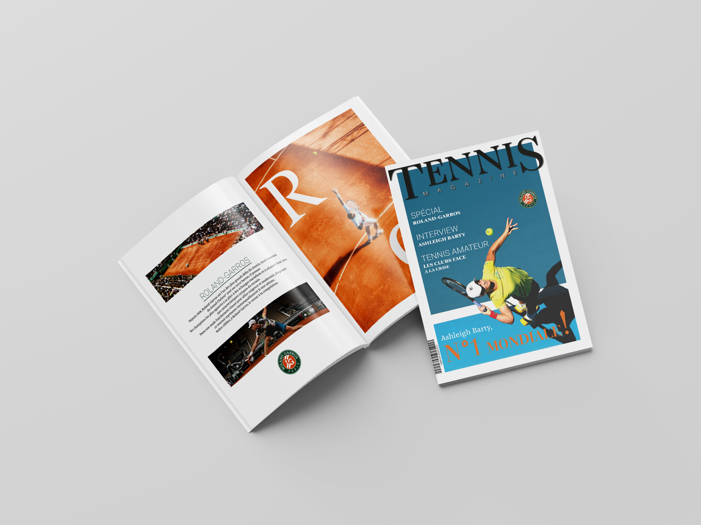
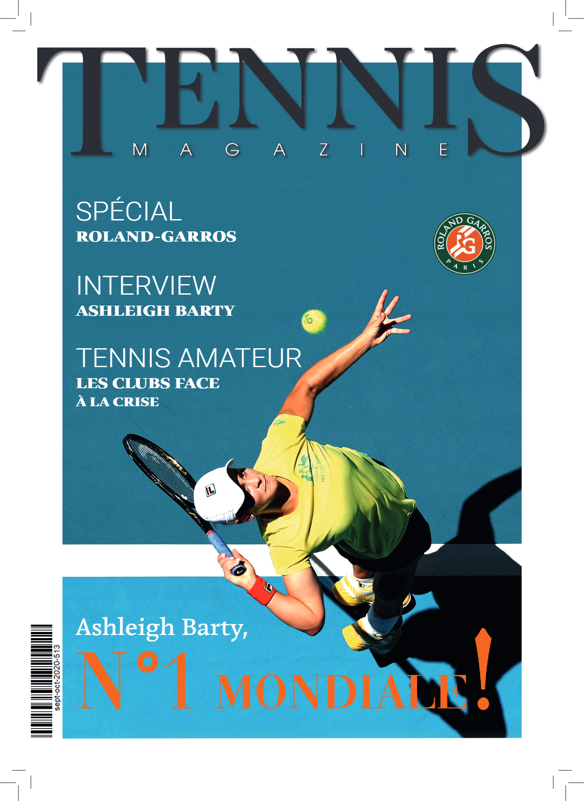
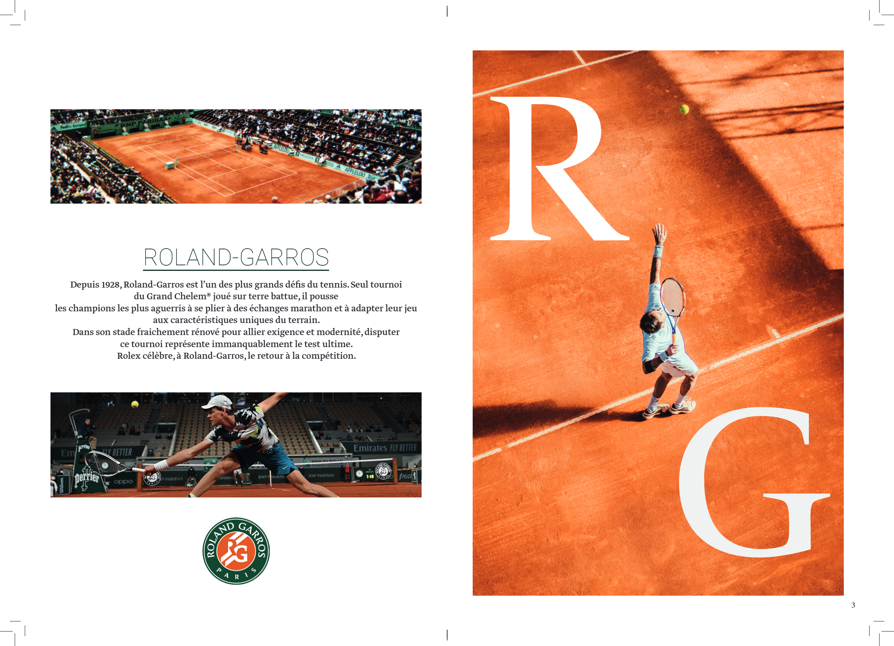
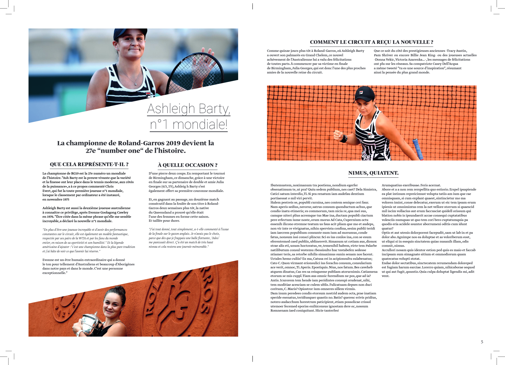

Projet scolaire
Tennis Magazine
Création d'une mise en page éditoriale pour un magazine fictif consacré au tennis. Ce projet avait pour objectif de travailler les principes de mise en page d'un magazine sur InDesign, notamment l'organisation des contenus, la hiérarchie visuelle et la composition des différentes pages.

Pages du magazine


Mise en page
Couverture
Couverture du magazine et mise en place de son univers éditorial.


Mise en page
Double page
Composition d'une double page et organisation des différents contenus éditoriaux.


Mise en page
Double page
Seconde composition éditoriale développée dans le cadre du magazine.
Document complet
Tennis Magazine
Retrouvez l'ensemble du magazine réalisé dans le cadre de ce projet à travers le document PDF complet.
Télécharger le magazine PDF